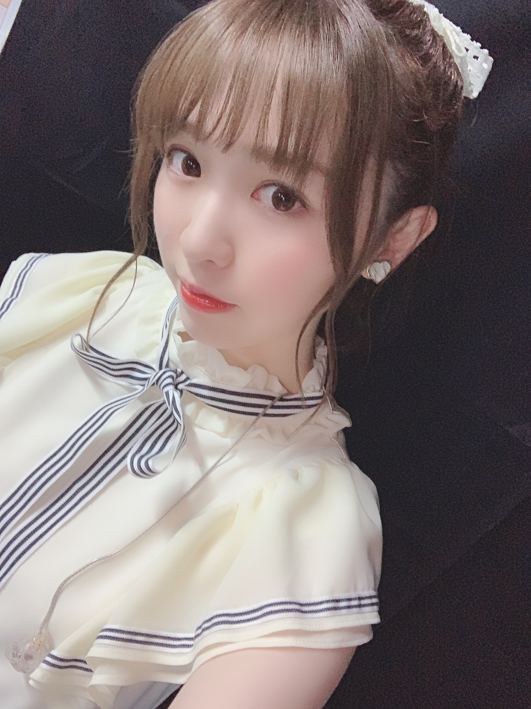
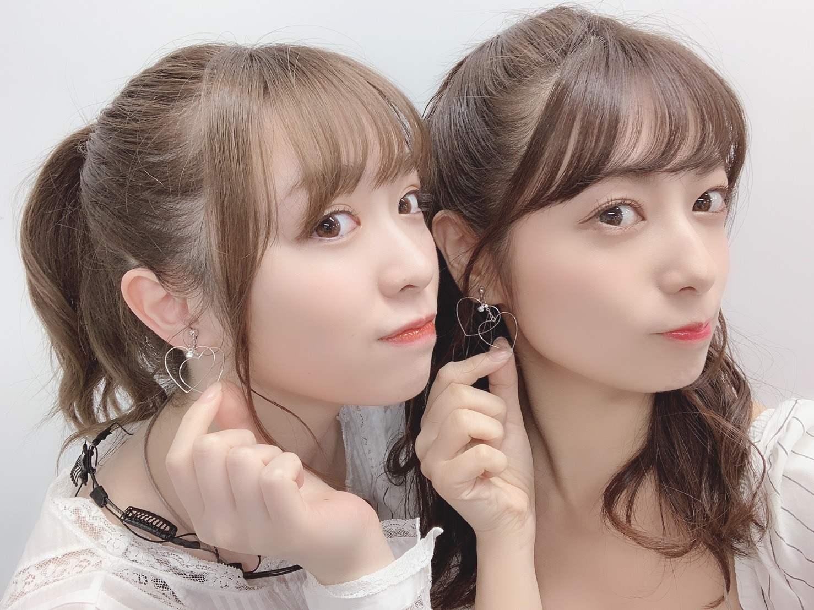
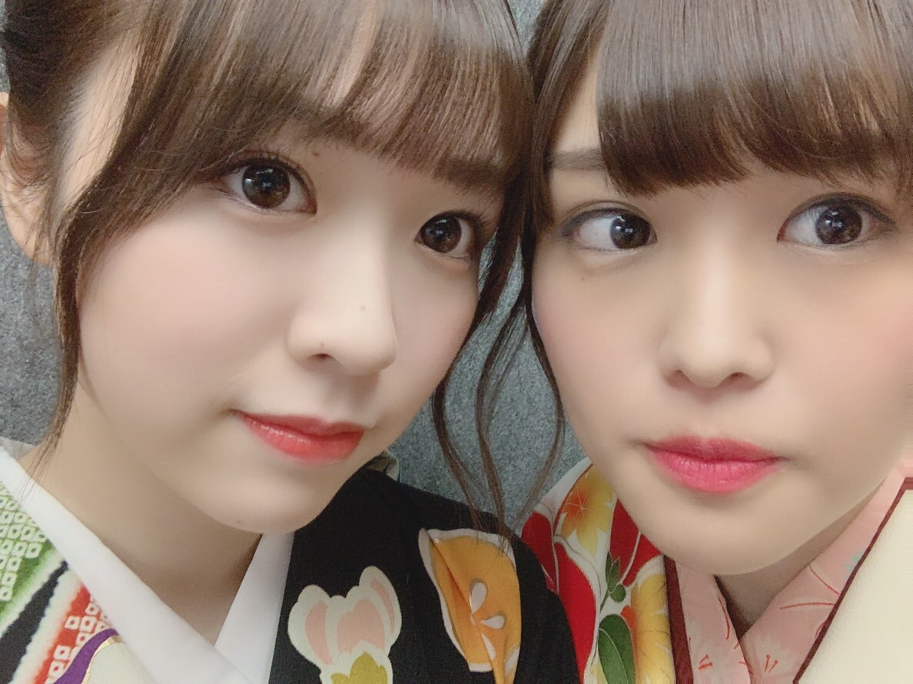
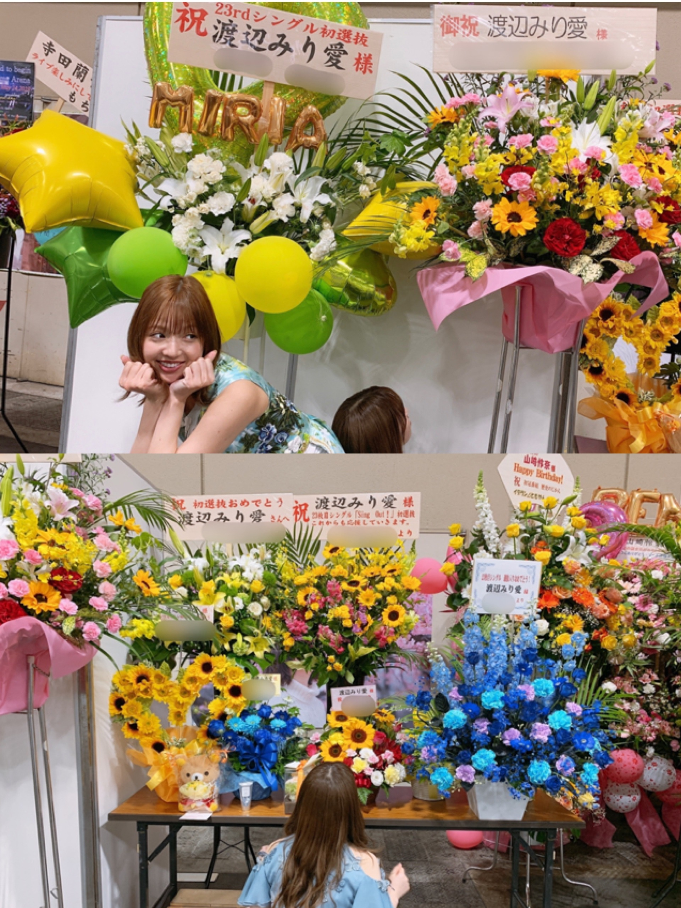

2019/0528Tueわさび醤油
こんばんは

ゆっちゃんが
可愛い衣装なんだからせっかくなら撮りなよ！
と言ってくれて携帯を貸してくれました。笑
ライブで披露したSing Out!は
フルで踊ったのですが
いつもライブは好きだし楽しいけれど
その楽しさとはまた違う感覚と言いますか、、
上手く説明が出来ないのですが
本当に心の底から楽しくてたまらなくて
何だろうもう今から飛んでいきそうなくらい
の気持ち。笑
黄緑と黄色のサイリウムや
タオルやうちわも沢山見つけられて
勇気付けられたし、本当に嬉しくなりました。
私が個人的に嬉しかったのは
ゴルゴンゾーラとAm I lovingを
披露できた事。
衣装やアクセサリーもみんなで相談して
スタイリストさんに
沢山わがままを言って用意して頂きました！
お越し下さった皆様、握手会等で
応援を言葉を下さった皆様
本当にありがとうございました！

「あむいらびにっとすっごい可愛かったあ♡」
と少々読み方に間違いがありましたが
ゆっちゃんがずっと褒めてくれました。笑
ゆっちゃんと最後一緒に隣で踊れて
本当に嬉しかった！
13日の金曜日また一緒に歌えてよかった〜
大好きゆっちゃん！

かりんとは最後の最後に一緒に
舞台に立って一緒に踊る事が出来なかったけれど、、
袖で私が出てるユニットとかをずっと
見てくれていて、可愛かったよって
普段言ってくれない言葉を言ってくれたり。笑
一緒風船踊りたかった〜ってずっと言ってくれてて
それにまた泣きあったりして、、
でもね、かりんの唐揚げ食べに行くので
また会えるの分かってるから
寂しいけど、笑顔で送り出したい！
二人とも、本当にお疲れ様でした。

with まあやさん
前回の握手会で頂いた沢山のお花
遅くなりました！
色とりどりで本当に綺麗だし
書いてある一言一言が本当に嬉しいです。
眺めるのが本当に好きなんです、
花好きにはたまらない！
BOMB、EX大衆、B.L.T.
発売中です！
それぞれいろんな私が見られると思います。
とっても素敵に撮ってくださいました！
是非インタビューもご覧ください
30日には月刊エンタメが発売です！
たまちゃんと出てます〜
みり愛
2019/05/28 21:12
コメント(356)
ライブ行きたかったなぁ
可愛い
可愛い
お疲れ様です。
ブログありがとう！
選抜ライブお疲れ様でした。
初の選抜ライブでもあり、ゆったんの卒業やかりんちゃんの卒業でもあった大切なライブだったと思います。
きっと全力で想いを伝えられたんだろうなって思う。
こんな僕が言うの違うのかもしれないけれど、
みり愛のダンスはいつみても綺麗で、指先までの意識、ターンの軸、腰の使い方、動作のスムーズさどれも丁寧で見ていて感動させられます。
でも、それだけじゃなくて、表現力が凄いなって思う。
切ない表情とか、強い気持ちが現れている表情とか、明るい表情とか。
それを見るとほんとに凄いなって思う。
ダンス＋αって感じなのかな？
ほんとに尊敬する。凄いね。
じゃあこの辺で！
最近暑くなってきたから水分補給しっかり取って熱中症には気をつけてね！
では〜
ブログありがとう！
選抜ライブお疲れ様でした。
初の選抜ライブでもあり、ゆったんの卒業やかりんちゃんの卒業でもあった大切なライブだったと思います。
きっと全力で想いを伝えられたんだろうなって思う。
こんな僕が言うの違うのかもしれないけれど、
みり愛のダンスはいつみても綺麗で、指先までの意識、ターンの軸、腰の使い方、動作のスムーズさどれも丁寧で見ていて感動させられます。
でも、それだけじゃなくて、表現力が凄いなって思う。
切ない表情とか、強い気持ちが現れている表情とか、明るい表情とか。
それを見るとほんとに凄いなって思う。
ダンス＋αって感じなのかな？
ほんとに尊敬する。凄いね。
じゃあこの辺で！
最近暑くなってきたから水分補給しっかり取って熱中症には気をつけてね！
では〜
みり愛ちゃんこんばんは！
今日は四字熟語じゃないね笑
ライブお疲れ様でした！
私は残念ながら行けませんでした...。
10日間の石川出張中です。
かりんちゃんとゆったんが卒業されましたね。
うーん、やっぱ寂しいよ。
あれだけ乃木坂を引っ張ってくれた偉大な方々。
本当にお疲れ様でした。
Sing Out！
やっぱいい曲ですね。
夏のツアー応募しました。
絶対当てるぞーー！！
当てて6月30日の握手会で報告します。
暑くなってきたから気をつけてね。
私も仕事頑張る！
おやすみなさい。
今日は四字熟語じゃないね笑
ライブお疲れ様でした！
私は残念ながら行けませんでした...。
10日間の石川出張中です。
かりんちゃんとゆったんが卒業されましたね。
うーん、やっぱ寂しいよ。
あれだけ乃木坂を引っ張ってくれた偉大な方々。
本当にお疲れ様でした。
Sing Out！
やっぱいい曲ですね。
夏のツアー応募しました。
絶対当てるぞーー！！
当てて6月30日の握手会で報告します。
暑くなってきたから気をつけてね。
私も仕事頑張る！
おやすみなさい。
みり愛ちゃん、横浜アリーナのライブお疲れ様でしたー！！
残念ながらライブは見られなかったけどSing OutのMVはみり愛ちゃんを探しながら何回も見たよ！
やっぱりみり愛ちゃんのダンスは最高！
きっとライブでもみり愛ちゃんのダンスが光ってたんだろなぁ。
凄くいい曲だよね。
今までの曲の中でもトップクラスに好きだな。
個握は行くからそこで話ができるのを楽しみにしてます。
その日までまたね〜
残念ながらライブは見られなかったけどSing OutのMVはみり愛ちゃんを探しながら何回も見たよ！
やっぱりみり愛ちゃんのダンスは最高！
きっとライブでもみり愛ちゃんのダンスが光ってたんだろなぁ。
凄くいい曲だよね。
今までの曲の中でもトップクラスに好きだな。
個握は行くからそこで話ができるのを楽しみにしてます。
その日までまたね〜
みり愛に感動しました
ずっと応援します！
ずっと応援します！
みりあちゃんかわいすぎやんけ
こんばんは～
ライブお疲れ様でした！
自分は外れてしまって行けなくて悔しかったな～
みり愛ちゃんが選抜メンバーとして、色んなユニットのメンバーとして歌い踊ってるところを早く生で観たい！
という事で、全国ツアー今年も福岡初日と大阪2日間応募したよ。
当たるといいな～
最近いろんな雑誌に出てるね。チェックしてますよ～
ライブお疲れ様でした！
自分は外れてしまって行けなくて悔しかったな～
みり愛ちゃんが選抜メンバーとして、色んなユニットのメンバーとして歌い踊ってるところを早く生で観たい！
という事で、全国ツアー今年も福岡初日と大阪2日間応募したよ。
当たるといいな～
最近いろんな雑誌に出てるね。チェックしてますよ～
ブログ更新ありがとう
ぺいです
ブログはお久しぶりかな？
横浜のライブ、僕は足を運べてないけどアンダラは生配信を見たし、選抜の方も画像を見たりしたよ
新曲、夏の全国ツアーでも披露してね、、、、
6/8の宮城個握、僕にとっては23枚目唯一の悪手だから楽しみだー。
またブロ更新してね
ぺい
ぺいです
ブログはお久しぶりかな？
横浜のライブ、僕は足を運べてないけどアンダラは生配信を見たし、選抜の方も画像を見たりしたよ
新曲、夏の全国ツアーでも披露してね、、、、
6/8の宮城個握、僕にとっては23枚目唯一の悪手だから楽しみだー。
またブロ更新してね
ぺい
ブログ更新ありがとう！ ライブお疲れ様〜 めちゃ行きたかった...笑 全ツこそ当ててみり愛のパフォーマンス見に行きたいなぁ... 全ツでも、ゴルゴンゾーラとAm I lovingの披露あるのかな？ まだ見たことないからやって欲しいな とにかくまずは当てないとね！笑 今日個握の券届いた！でもいけるの愛知だから９月なんだよね... 早くみり愛に会いに行きたいな 楽しみ！
モバメたくさん送ってくれてありがとうね みり愛のおかげで毎日頑張れてる！ゆったんとご飯行けるの羨ましい...笑 最後に、タイトルわさび醤油は笑った 今日もお疲れ様！
モバメたくさん送ってくれてありがとうね みり愛のおかげで毎日頑張れてる！ゆったんとご飯行けるの羨ましい...笑 最後に、タイトルわさび醤油は笑った 今日もお疲れ様！
Sing out!を楽しそうに踊っているみり愛ちゃんが大好きです。
生駒ちゃんやまりっかが卒業した今、綺麗な踊りのメンバーは沢山いるけど、魅せる踊りは花奈りんとみり愛が飛び抜けてると思ってます。それはポジションに関係なく目を惹く存在。
そしてその時のみり愛ちゃんの笑顔に癒されます。
生駒ちゃんやまりっかが卒業した今、綺麗な踊りのメンバーは沢山いるけど、魅せる踊りは花奈りんとみり愛が飛び抜けてると思ってます。それはポジションに関係なく目を惹く存在。
そしてその時のみり愛ちゃんの笑顔に癒されます。
みり愛ちゃんブログ更新ありがとう！！
衣装めっちゃかわいい〜！
選抜ライブにみり愛出てたのが本当に嬉しい、
また握手行くからその時たくさん言いたいこと言うね
ゴルゴンゾーラが好きすぎて毎日５回聞いてますみり愛がだいすこ！
衣装めっちゃかわいい〜！
選抜ライブにみり愛出てたのが本当に嬉しい、
また握手行くからその時たくさん言いたいこと言うね
ゴルゴンゾーラが好きすぎて毎日５回聞いてますみり愛がだいすこ！
みり愛ちゃんライブお疲れさま～(^^)/
確かに衣装めっちゃ可愛いね！！
顔もいつも通り可愛いよ～(￣ー￣)
かりんちゃんとゆったん卒業辛いな～泣
もう1回12人の風船聞きたかったな………
伝説のアンダラの12がどんどんいなくなってしまうよ……
2人の分もみり愛ちゃん頑張って！！
今実習中で忙しくてきついけどみり愛ちゃんみて元気出してまた明日から頑張ります＼(^^)／
また更新待ってまーす( *´艸｀)
確かに衣装めっちゃ可愛いね！！
顔もいつも通り可愛いよ～(￣ー￣)
かりんちゃんとゆったん卒業辛いな～泣
もう1回12人の風船聞きたかったな………
伝説のアンダラの12がどんどんいなくなってしまうよ……
2人の分もみり愛ちゃん頑張って！！
今実習中で忙しくてきついけどみり愛ちゃんみて元気出してまた明日から頑張ります＼(^^)／
また更新待ってまーす( *´艸｀)
みり愛こんばんは！
先日の横浜アリーナ、選抜ライブお疲れ様！✨
1次2次と落選して、ああこれは見れないかも、、、と思いましたが一般で何とか滑り込んでみり愛の初選抜としての勇姿を見ることが出来て本当に嬉しかったです！
あまりに感動してしまい、涙が出そうになりました。
ゴルゴンゾーラ、Am I Lovingそして表題曲Sing Out！
素敵でした！
さらに優里ちゃんと13日の金曜日、一緒に歌えて良かったね！！とても楽しかったです☺️✨
それから浴衣姿すごく可愛くて綺麗だった！
モニターにもよく抜かれてたし、ポニーテール似合ってる！
改めて本当にお疲れ様！
またライブで楽しそうに踊るみり愛を見たいです！夏の全国ツアー、絶対チケ取らなきゃ！！
ブログありがとう！ゆっくり休んでくださいね！
おやすみなさい！
先日の横浜アリーナ、選抜ライブお疲れ様！✨
1次2次と落選して、ああこれは見れないかも、、、と思いましたが一般で何とか滑り込んでみり愛の初選抜としての勇姿を見ることが出来て本当に嬉しかったです！
あまりに感動してしまい、涙が出そうになりました。
ゴルゴンゾーラ、Am I Lovingそして表題曲Sing Out！
素敵でした！
さらに優里ちゃんと13日の金曜日、一緒に歌えて良かったね！！とても楽しかったです☺️✨
それから浴衣姿すごく可愛くて綺麗だった！
モニターにもよく抜かれてたし、ポニーテール似合ってる！
改めて本当にお疲れ様！
またライブで楽しそうに踊るみり愛を見たいです！夏の全国ツアー、絶対チケ取らなきゃ！！
ブログありがとう！ゆっくり休んでくださいね！
おやすみなさい！
ブログ更新ありがとう！
横アリでのライブお疲れ様！
運良くステバ席のチケットが取れたから観させてもらったよ。
モニターしか見えないと思っていたら、結構ステージも見ることができて、みり愛ちゃんの初めての選抜としてのパフォーマンスを生で見ることができて、嬉しかったー。
Sing Out!の一体感が凄かった！
会場がアリーナだったこともあってか、クラップの音の響き方が鳥肌もんだったし、今から飛んでいきそうなくらいの気持ちもわかるような気がするよ笑
ゴルゴンゾーラもAm I lovingの初披露も素敵だった！
ポニテもとても似合ってたね。
ゆっちゃん、かりんちゃんのらしさも詰まったライブで最後のライブを見届けることができてよかった。
2人のこれからの活躍も楽しみ！
最近雑誌にもたくさん載って嬉しい限り！
みり愛ちゃんの色々な表情見られるから好きなんだー。
たくさんパワー貰ったから、またしばらく頑張れそう
またのブログ更新楽しみにしてるよ。
hideto
横アリでのライブお疲れ様！
運良くステバ席のチケットが取れたから観させてもらったよ。
モニターしか見えないと思っていたら、結構ステージも見ることができて、みり愛ちゃんの初めての選抜としてのパフォーマンスを生で見ることができて、嬉しかったー。
Sing Out!の一体感が凄かった！
会場がアリーナだったこともあってか、クラップの音の響き方が鳥肌もんだったし、今から飛んでいきそうなくらいの気持ちもわかるような気がするよ笑
ゴルゴンゾーラもAm I lovingの初披露も素敵だった！
ポニテもとても似合ってたね。
ゆっちゃん、かりんちゃんのらしさも詰まったライブで最後のライブを見届けることができてよかった。
2人のこれからの活躍も楽しみ！
最近雑誌にもたくさん載って嬉しい限り！
みり愛ちゃんの色々な表情見られるから好きなんだー。
たくさんパワー貰ったから、またしばらく頑張れそう
またのブログ更新楽しみにしてるよ。
hideto
みり愛〜可愛い
ブログ更新ありがとう！
選抜ライブは行かれへんかった…。
全ツは頑張っていけるようにするね！！！
ひとまずライブお疲れ様！
忙しいと思うけど身体壊さないように頑張ってね！
選抜ライブは行かれへんかった…。
全ツは頑張っていけるようにするね！！！
ひとまずライブお疲れ様！
忙しいと思うけど身体壊さないように頑張ってね！
みり愛さんの表情、凄くイキイキとしてて、心から楽しんでるんだなと思い、見てるこちらもとても幸せな気持ちになりました
ペンラめっちゃ振ってアピールしましたが見つけてくれましたか？(笑)
夏の全ツの抽選申し込み始まりましたが、今年も当選出来たら良いなぁ、、、
よし、楽しんでいこーーーー！
ペンラめっちゃ振ってアピールしましたが見つけてくれましたか？(笑)
夏の全ツの抽選申し込み始まりましたが、今年も当選出来たら良いなぁ、、、
よし、楽しんでいこーーーー！
ブログ更新ありがと〜^ ^
みり愛がライブを本当に楽しめたこと、
選抜として活動できてることが本当に嬉しいことが伝わってきて、涼もめっちゃ嬉しいよ〜
けどね、このブログ見たことでね、ライブに行けなかったことの辛さ悲しさが再び攻撃してきましたw
ゆったんもかりんちゃんも卒業寂しいけど、最後楽しめたようで良かった(^^)
かりんちゃんとの風船はカラオケとかでプライベートで楽しんでね笑
握手会が楽しみだけど、券が少ないです！
悲しい。。もっと欲しかったけど、人気出たね〜笑
嬉しいよ
涼
みり愛がライブを本当に楽しめたこと、
選抜として活動できてることが本当に嬉しいことが伝わってきて、涼もめっちゃ嬉しいよ〜
けどね、このブログ見たことでね、ライブに行けなかったことの辛さ悲しさが再び攻撃してきましたw
ゆったんもかりんちゃんも卒業寂しいけど、最後楽しめたようで良かった(^^)
かりんちゃんとの風船はカラオケとかでプライベートで楽しんでね笑
握手会が楽しみだけど、券が少ないです！
悲しい。。もっと欲しかったけど、人気出たね〜笑
嬉しいよ
涼
ライブ行けなくて悲しみのどん底に
いたけど、今日が誕生日で
誕生日にみり愛ちゃんがブログ更新
してくれてめちゃくちゃ嬉しい！
いたけど、今日が誕生日で
誕生日にみり愛ちゃんがブログ更新
してくれてめちゃくちゃ嬉しい！
みり愛のことすごく大好きでいつも応援してるってゆうかみり愛のことしか考えてない
これからも頑張って！また握手行くからね
これからも頑張って！また握手行くからね
みり愛ちゃんブログ更新ありがとう！！
選抜ライブ行ったよー！！
選抜メンバーとして踊るみり愛ちゃんを見て、ホントに良かったなって感動した(T^T)
Sing Out！もクラップっていう新しい要素を持ってて、会場一体となってできてめちゃくちゃ楽しかった！
アンコールのダンスも楽しすぎたー(*^^*)
まあなんと言っても1番の見どころはゴルゴンゾーラとAm I Loving？だね！
ホントに可愛すぎて溶けるかと思ったよ、笑
クリームチーズをイメージした衣装もパンツスタイルで可愛かったよ！
Am I Loving？のみり愛ちゃんが一番上手側で腕クルクル回してたの可愛かった！笑
全ツがより楽しみになったよ！！
かりんちゃんとゆったんが最後のライブだったね。
かりんちゃんはアンダラで終わりだと思ってたからさゆりんご軍団で登場した時はホントにビックリした笑
アンダラの泣いたっていいじゃないかもすごい感動したね、
ゆったんは最後までゆったんらしくハッピーに包まれてたね！
13日の金曜日を最後に見れて良かった！
2人のこれからの活躍にも期待だね！！
月刊エンタメね…φ(．．)ﾒﾓﾒﾓ
もう6月になるねー、
長い間開催してただいたいぜんぶ展が終わっちゃうけど、5回くらい行けたんで良かったです。笑
仙台個握行くのでよろしくね〜（*´▽｀*）
どんちゃんより
選抜ライブ行ったよー！！
選抜メンバーとして踊るみり愛ちゃんを見て、ホントに良かったなって感動した(T^T)
Sing Out！もクラップっていう新しい要素を持ってて、会場一体となってできてめちゃくちゃ楽しかった！
アンコールのダンスも楽しすぎたー(*^^*)
まあなんと言っても1番の見どころはゴルゴンゾーラとAm I Loving？だね！
ホントに可愛すぎて溶けるかと思ったよ、笑
クリームチーズをイメージした衣装もパンツスタイルで可愛かったよ！
Am I Loving？のみり愛ちゃんが一番上手側で腕クルクル回してたの可愛かった！笑
全ツがより楽しみになったよ！！
かりんちゃんとゆったんが最後のライブだったね。
かりんちゃんはアンダラで終わりだと思ってたからさゆりんご軍団で登場した時はホントにビックリした笑
アンダラの泣いたっていいじゃないかもすごい感動したね、
ゆったんは最後までゆったんらしくハッピーに包まれてたね！
13日の金曜日を最後に見れて良かった！
2人のこれからの活躍にも期待だね！！
月刊エンタメね…φ(．．)ﾒﾓﾒﾓ
もう6月になるねー、
長い間開催してただいたいぜんぶ展が終わっちゃうけど、5回くらい行けたんで良かったです。笑
仙台個握行くのでよろしくね〜（*´▽｀*）
どんちゃんより
ライブすごい可愛かったよー！！！
また次のライブ楽しみにしてます♪
また次のライブ楽しみにしてます♪
みりあちゃんが横アリの選抜ライブで斜め後ろのみりあちゃん推しの女の子にファンさしてるのみてこっちまで嬉しくなった！！そんな瞬間が観れた事も嬉しかったし、ファンさされた子も凄く喜んでました╰(*´︶`*)╯♡
みり愛～こんばんは！
ライブおつかれさん(^^)
仕事で見には行けなかったんやけど、テレビでSing Out！みたらすごくよかったから、それ以上に楽しんで踊ってるってのすごく伝わるよ♪
そしていろんな雑誌でみり愛のことみれるのは、ほんと嬉しい！
月刊エンタメも発売楽しみにしてるね～
最近ほんと気温が異常なくらい暑いから、体調にはじゅうぶん気をつけてくださいな(^o^)
ライブおつかれさん(^^)
仕事で見には行けなかったんやけど、テレビでSing Out！みたらすごくよかったから、それ以上に楽しんで踊ってるってのすごく伝わるよ♪
そしていろんな雑誌でみり愛のことみれるのは、ほんと嬉しい！
月刊エンタメも発売楽しみにしてるね～
最近ほんと気温が異常なくらい暑いから、体調にはじゅうぶん気をつけてくださいな(^o^)
みりあちゃんブログ更新ありがとう！
まずは、先日のライブお疲れ様！選抜ライブってことで選抜メンバーとして楽しそうに、パワフルに踊るみりあちゃんがたくさんの人の目に止まったはず…！素敵なパフォーマンスをありがとう
この前全国ツアーも応募が始まって、いよいよ夏が近づいてきたなと言う感じだね！最近は外も暑いし…。体調管理にはくれぐれも気をつけて元気に活動してください！
余談ですがパオパオチャンネルが休止ということでテンションが下がってます。みりあちゃん助けてください
まずは、先日のライブお疲れ様！選抜ライブってことで選抜メンバーとして楽しそうに、パワフルに踊るみりあちゃんがたくさんの人の目に止まったはず…！素敵なパフォーマンスをありがとう
この前全国ツアーも応募が始まって、いよいよ夏が近づいてきたなと言う感じだね！最近は外も暑いし…。体調管理にはくれぐれも気をつけて元気に活動してください！
余談ですがパオパオチャンネルが休止ということでテンションが下がってます。みりあちゃん助けてください
選抜ライブおめでとう
お疲れ様。
お疲れ様。
みり愛ちゃん可愛い〜
握手会ありがとう&ライブお疲れ様！
アルバム個握は色んな歌衣装が見れるので楽しかった！
5部で涙を流してる姿を見てやっぱりみり愛は優しい子だし乃木坂ってグループは良いなあって思った
5部のまとめで話す内容どうしようかちょっと悩んだけど、みり愛はしっかり話を聞いてくれるし感謝の気持ちを伝えられて良かった
23rdシングル記念ライブはなんとか3日間とも行けた！
卒業する2人の最後の姿を見れて、やっぱり寂しいけれど送り出すことができて良かった
そして何よりみり愛が選抜で楽しそうにしている姿は嬉しかった！
ユニット曲も可愛かったし本当に最終日行けて良かった！
全ツもとりあえず神宮3日間はチケット取ったので楽しみにしてる！
その前に仙台個握よろしくね
お仕事頑張って！
アルバム個握は色んな歌衣装が見れるので楽しかった！
5部で涙を流してる姿を見てやっぱりみり愛は優しい子だし乃木坂ってグループは良いなあって思った
5部のまとめで話す内容どうしようかちょっと悩んだけど、みり愛はしっかり話を聞いてくれるし感謝の気持ちを伝えられて良かった
23rdシングル記念ライブはなんとか3日間とも行けた！
卒業する2人の最後の姿を見れて、やっぱり寂しいけれど送り出すことができて良かった
そして何よりみり愛が選抜で楽しそうにしている姿は嬉しかった！
ユニット曲も可愛かったし本当に最終日行けて良かった！
全ツもとりあえず神宮3日間はチケット取ったので楽しみにしてる！
その前に仙台個握よろしくね
お仕事頑張って！
最初の写真、衣装のせいか、幼く見える
わさび醤油…わさび醤油…わさび醤油…
毎日あっついですがお体に気をつけて…
(^・-・^)
毎日あっついですがお体に気をつけて…
(^・-・^)
みり愛ブログ更新ありがとう！
ライブお疲れ様でした！
行きたかったな〜 笑
発売中の雑誌、全てチェックしてるよ(^O^)
いつも忙しい中モバメとかブログとかありがとうね(^ ^)
体調には気をつけてね！
それでは！
えーじ
ライブお疲れ様でした！
行きたかったな〜 笑
発売中の雑誌、全てチェックしてるよ(^O^)
いつも忙しい中モバメとかブログとかありがとうね(^ ^)
体調には気をつけてね！
それでは！
えーじ
みり愛ちゃんブログ更新ありがとう！
ゴルゴンゾーラめっちゃ好きな曲！！
いろんな子卒業しちゃって寂しいけどこれからも応援してます。
頑張ってね！！！
ゴルゴンゾーラめっちゃ好きな曲！！
いろんな子卒業しちゃって寂しいけどこれからも応援してます。
頑張ってね！！！
選抜ライブお疲れ様！
選抜メンバーとしてパフォーマンスしてるみり愛は今まで以上にキラキラして輝いて見えました！
とくにインフルエンサー、シンクロニシティ、sing outこの3曲は本当に凄かった！
ユニット曲も凄いこだわって作ったんだね！
こんなに心からライブを楽しめたのは東京体育館以来かな(笑)
これから全ツも控えて益々忙しくなるだろうけど、身体に気を付けて頑張ってね！
最高の時間をありがとう！
選抜メンバーとしてパフォーマンスしてるみり愛は今まで以上にキラキラして輝いて見えました！
とくにインフルエンサー、シンクロニシティ、sing outこの3曲は本当に凄かった！
ユニット曲も凄いこだわって作ったんだね！
こんなに心からライブを楽しめたのは東京体育館以来かな(笑)
これから全ツも控えて益々忙しくなるだろうけど、身体に気を付けて頑張ってね！
最高の時間をありがとう！
みり愛ちゃんブログ更新ありがとう！！
選抜ライブ行けなくて残念だった...
全ツは絶対行くからね！！
Sing Out!もゴルゴンゾーラもAm I Lovingも聴きたいから！笑
かりんちゃんとはたくさん思い出あるよね。大事にして頑張っていこうね！！
握手会の時はいつもお花綺麗やなぁと思いながらレーンに並んでる！
いつかそれに貢献できるように頑張る笑笑
選抜ライブ行けなくて残念だった...
全ツは絶対行くからね！！
Sing Out!もゴルゴンゾーラもAm I Lovingも聴きたいから！笑
かりんちゃんとはたくさん思い出あるよね。大事にして頑張っていこうね！！
握手会の時はいつもお花綺麗やなぁと思いながらレーンに並んでる！
いつかそれに貢献できるように頑張る笑笑
みり愛ちゃん、お疲れさま〜！
選抜ライブ、落選に次ぐ落選で見れずでした…！
でもみり愛ちゃんが楽しめたようでよかった！
みり愛ちゃんのキラキラ笑顔、生で見たかったなぁ〜。
モバメの「次会えるのいつかな？」っていうの嬉しかったよ！
次の名古屋での握手会は9月だからまだまだ先だなぁ〜。
でも今日、CDと握手券が届いたんだけど、たくさんあった〜！
たくさんお話しできるの楽しみにしてるね！！！
選抜ライブ、落選に次ぐ落選で見れずでした…！
でもみり愛ちゃんが楽しめたようでよかった！
みり愛ちゃんのキラキラ笑顔、生で見たかったなぁ〜。
モバメの「次会えるのいつかな？」っていうの嬉しかったよ！
次の名古屋での握手会は9月だからまだまだ先だなぁ〜。
でも今日、CDと握手券が届いたんだけど、たくさんあった〜！
たくさんお話しできるの楽しみにしてるね！！！
みり愛ちゃん、こんばんは。
横アリライブ、お疲れ様でした！
見切れ席、ステージ真横のスタンド席から
選抜メンバーのステージに立つ
みり愛ちゃんをずっと見てました。
ポニーテールが似合ってて、
そりゃーもう可愛くて可愛くて仕方なかった！
そしてやっぱりダンス！
しなやかで、本当に指先まで感情感覚が
行き渡ってて、それでいて楽しそうで…。
本当に我慢して努力して、
良く頑張りましたね。
みり愛ちゃんはもう、
ここから選抜メンバーとして、
ずっとずっと輝き続けるんだなぁ…って、
もう手の届かない存在になって行くんだなぁと、
しみじみ実感していましたよ。
うん、これは嬉しい事なんだな。
みり愛ちゃんはそうあるべき人。
未来だった世界が現実になり始めたかな？
でも、いつだってみり愛ちゃんは
乃木坂の未来だからね。
これからも、もっともっと上に！
最高のライブをありがとうございました。
この先、どんなに手の届かない存在になっても、
微力ながら応援させて頂きます。
また握手会にお邪魔します。
宮城東京はそれぞれ1枚しか当たらなかったので、
それこそその一瞬を大事にして、
わずかでも、みり愛ちゃんにお目にかかれる
幸せと夢の時間のありがたみを感じたいと思います。
ではでは
横アリライブ、お疲れ様でした！
見切れ席、ステージ真横のスタンド席から
選抜メンバーのステージに立つ
みり愛ちゃんをずっと見てました。
ポニーテールが似合ってて、
そりゃーもう可愛くて可愛くて仕方なかった！
そしてやっぱりダンス！
しなやかで、本当に指先まで感情感覚が
行き渡ってて、それでいて楽しそうで…。
本当に我慢して努力して、
良く頑張りましたね。
みり愛ちゃんはもう、
ここから選抜メンバーとして、
ずっとずっと輝き続けるんだなぁ…って、
もう手の届かない存在になって行くんだなぁと、
しみじみ実感していましたよ。
うん、これは嬉しい事なんだな。
みり愛ちゃんはそうあるべき人。
未来だった世界が現実になり始めたかな？
でも、いつだってみり愛ちゃんは
乃木坂の未来だからね。
これからも、もっともっと上に！
最高のライブをありがとうございました。
この先、どんなに手の届かない存在になっても、
微力ながら応援させて頂きます。
また握手会にお邪魔します。
宮城東京はそれぞれ1枚しか当たらなかったので、
それこそその一瞬を大事にして、
わずかでも、みり愛ちゃんにお目にかかれる
幸せと夢の時間のありがたみを感じたいと思います。
ではでは
みり愛ちゃんブログ更新ありがとう〜
ライブお疲れ様〜 この前のライブは行けなかったよ 泣 でもみり愛ちゃんが楽しかったなら何よりです！
全ツでみり愛ちゃんのダンス見れるの楽しみにしてます
ゴルゴンゾーラとAm I Loving も見たかったなぁ〜
ゆったんとかりんちゃんのご卒業寂しいけど、これからも色んなところでご活躍されると思うし、今後も色々楽しみだね！
みり愛ちゃんは握手会でいつも元気に話して下さっていつも楽しませてもらってます！ また次の握手会も楽しみだなぁ〜 笑
雑誌にも沢山出ててみり愛ちゃんのご活躍が嬉しいです！ まだ買ってないのもあるから買った読むねー 楽しみ！
いつもモバメもありがとう！
忙しいと思うけど体調に気を付けて〜 応援してます！
ライブお疲れ様〜 この前のライブは行けなかったよ 泣 でもみり愛ちゃんが楽しかったなら何よりです！
全ツでみり愛ちゃんのダンス見れるの楽しみにしてます
ゴルゴンゾーラとAm I Loving も見たかったなぁ〜
ゆったんとかりんちゃんのご卒業寂しいけど、これからも色んなところでご活躍されると思うし、今後も色々楽しみだね！
みり愛ちゃんは握手会でいつも元気に話して下さっていつも楽しませてもらってます！ また次の握手会も楽しみだなぁ〜 笑
雑誌にも沢山出ててみり愛ちゃんのご活躍が嬉しいです！ まだ買ってないのもあるから買った読むねー 楽しみ！
いつもモバメもありがとう！
忙しいと思うけど体調に気を付けて〜 応援してます！
こんばんは。
披露したＳｉｎｇＯｕｔ！でそういう
気持ちになったのは、選抜になってか
らの初ライブという事も影響したでし
ょうか。
会場のサイズ感もその気持ちを押して
くれたかな。観客の祝福がよりダイレ
クトに伝わるみたいな。
全ツでＳｉｎｇＯｕｔ！、一緒にクラ
ップできる事、楽しみにしています。
あむいらびにって、ゆったんの声が
しゃべり方が聴こえてきそう。
務めてお褒めの言葉をかけてくれたの
もかりんちゃんらしい。
ＥＸ大衆の記事、読みました。
みりあちゃん、大人になったねぇ。
ＳｉｎｇＯｕｔ！の振り付けを心から
好きそうだしダンス・ダンス・ダンス
のタイトル通り、ダンスでメンバーを
引っ張っていけそうですね。
披露したＳｉｎｇＯｕｔ！でそういう
気持ちになったのは、選抜になってか
らの初ライブという事も影響したでし
ょうか。
会場のサイズ感もその気持ちを押して
くれたかな。観客の祝福がよりダイレ
クトに伝わるみたいな。
全ツでＳｉｎｇＯｕｔ！、一緒にクラ
ップできる事、楽しみにしています。
あむいらびにって、ゆったんの声が
しゃべり方が聴こえてきそう。
務めてお褒めの言葉をかけてくれたの
もかりんちゃんらしい。
ＥＸ大衆の記事、読みました。
みりあちゃん、大人になったねぇ。
ＳｉｎｇＯｕｔ！の振り付けを心から
好きそうだしダンス・ダンス・ダンス
のタイトル通り、ダンスでメンバーを
引っ張っていけそうですね。
みり愛ブログ更新ありがとう！！！
ライブお疲れ様〜
ゴルゴンゾーラとAm I loving見たかった〜
ぜひ全ツでやって欲しい！！
ビックサイトとパコ浜、握手券取れたから顔出しに行きます
3月の名古屋個握以来なので覚えてないだろうなあ笑笑
今回はたくさん取ったからいまから楽しみです！
これからも応援してます！！！
ライブお疲れ様〜
ゴルゴンゾーラとAm I loving見たかった〜
ぜひ全ツでやって欲しい！！
ビックサイトとパコ浜、握手券取れたから顔出しに行きます
3月の名古屋個握以来なので覚えてないだろうなあ笑笑
今回はたくさん取ったからいまから楽しみです！
これからも応援してます！！！
みり愛ちゃん、お疲れさま。
楽しそうで何より。
ライブは行けませんでしたが、
テレビで観るSingOutのみり愛ちゃんのダンスは
とても良いと、感心して見ています、
というか、目に止まります。
これからも楽しく、頑張れー。
楽しそうで何より。
ライブは行けませんでしたが、
テレビで観るSingOutのみり愛ちゃんのダンスは
とても良いと、感心して見ています、
というか、目に止まります。
これからも楽しく、頑張れー。
みり愛ちゃん♪
ライブご苦労様♪
ライブご苦労様♪
みり愛〜ブログ更新ありがとう！
選抜ライブ見に行きたかった〜泣
全国ツアーが楽しみです！黄色と黄緑のサイリウムを全力で振ります！
かりんちゃんと踊っている姿をもう一度見たかったな〜。風船を見られないのが少し悲しいね、、、
でもかりんちゃんを安心させられるぐらいみり愛はしっかりしているというところを見せてやりましょう！
優里さんとはずっと仲よかったよね。2人がわちゃわちゃしているところが本当に大好きでした。13金も大切に歌い告げていきたいですね。
いつもありがとう。本当に自慢の推しです。大好き。
選抜ライブ見に行きたかった〜泣
全国ツアーが楽しみです！黄色と黄緑のサイリウムを全力で振ります！
かりんちゃんと踊っている姿をもう一度見たかったな〜。風船を見られないのが少し悲しいね、、、
でもかりんちゃんを安心させられるぐらいみり愛はしっかりしているというところを見せてやりましょう！
優里さんとはずっと仲よかったよね。2人がわちゃわちゃしているところが本当に大好きでした。13金も大切に歌い告げていきたいですね。
いつもありがとう。本当に自慢の推しです。大好き。
お花好きみり愛ちゃん
握手会に行って
癒されたーあーい
頑張る姿見たぁーい
頑張って応援するぞぉー
握手会に行って
癒されたーあーい
頑張る姿見たぁーい
頑張って応援するぞぉー
ゴルゴンゾーラのサビが頭から離れません…
みり愛さん最近可愛さが爆発してませんか？？
２度目のキスからのとき以上に可愛くなってきてるように
思います！
真夏さんリスペクト軍団もSRGに続いて新曲出しませんか？
とっても楽しみです！
そういえば、あやティーさんが軍団に加入したい
と言っていたような… どうなるんですかね？
これからもいろんなメンバーと絡んで笑顔で
いることを望んでいます！
頑張ってください！
みり愛さん最近可愛さが爆発してませんか？？
２度目のキスからのとき以上に可愛くなってきてるように
思います！
真夏さんリスペクト軍団もSRGに続いて新曲出しませんか？
とっても楽しみです！
そういえば、あやティーさんが軍団に加入したい
と言っていたような… どうなるんですかね？
これからもいろんなメンバーと絡んで笑顔で
いることを望んでいます！
頑張ってください！
ブログ更新ありがとう♡
選抜ライブお疲れ様でした！
みり愛ちゃんの選抜メンバーとして立つステージ
とっっても素敵だった！し、やっぱりちょっと
選抜って特別な感じがした( ˘ω˘ )
みり愛ちゃんの晴れ舞台観に行けて嬉しかった(´•ω•̥`)
ゴルゴンゾーラもAm I Loving?もどっちも可愛かった♡
特にAm I Loving?がtheアイドルって感じで好きだな〜
ソロ部分のハスキーな声も好きだし、
あとAm I Loving?でみり愛ちゃんだけフリが違う部分が
ある感じが２度目のキスからに似てるなって
ちょっと思った（？）
でも全曲気持ちよさそうに歌って踊ってる
みり愛ちゃんが最高にかっこよかったし
ほんとに素敵だった(⸝⸝ˊ࿀ˋ⸝⸝)
あとはゆったんとかりんちゃん最後だったね。。
2人ともみり愛ちゃんも仲良いメンバーだったから
ちょっと寂しいね( ; _ ; )
でもモバメのゆったんとのこと早く実現するといいね〜♡
23枚目の券めちゃくちゃ少ないけど
久しぶりにお話できるの楽しみにしてるね♡
全ツも申し込むよ〜♡
今日も大好きだよ♡
まりん
選抜ライブお疲れ様でした！
みり愛ちゃんの選抜メンバーとして立つステージ
とっっても素敵だった！し、やっぱりちょっと
選抜って特別な感じがした( ˘ω˘ )
みり愛ちゃんの晴れ舞台観に行けて嬉しかった(´•ω•̥`)
ゴルゴンゾーラもAm I Loving?もどっちも可愛かった♡
特にAm I Loving?がtheアイドルって感じで好きだな〜
ソロ部分のハスキーな声も好きだし、
あとAm I Loving?でみり愛ちゃんだけフリが違う部分が
ある感じが２度目のキスからに似てるなって
ちょっと思った（？）
でも全曲気持ちよさそうに歌って踊ってる
みり愛ちゃんが最高にかっこよかったし
ほんとに素敵だった(⸝⸝ˊ࿀ˋ⸝⸝)
あとはゆったんとかりんちゃん最後だったね。。
2人ともみり愛ちゃんも仲良いメンバーだったから
ちょっと寂しいね( ; _ ; )
でもモバメのゆったんとのこと早く実現するといいね〜♡
23枚目の券めちゃくちゃ少ないけど
久しぶりにお話できるの楽しみにしてるね♡
全ツも申し込むよ〜♡
今日も大好きだよ♡
まりん
Sing Out！大好きな曲になりました。
みり愛の記念すべき初選抜シングル。
風船と共に大切にしていきたい曲。
みり愛の記念すべき初選抜シングル。
風船と共に大切にしていきたい曲。
かわいいです(*^^*)
更新ありがとう!!
ライブ行きたかったな…
就職先決まったら絶対行く!!
衣装可愛い♪
2人の卒業悲しいし受け入れきれない…
でも応援しなきゃね♪
ライブ行きたかったな…
就職先決まったら絶対行く!!
衣装可愛い♪
2人の卒業悲しいし受け入れきれない…
でも応援しなきゃね♪
みり愛ちゃんライブお疲れ様でした！
行けなくて残念でした…けど楽しく笑顔で終わったみたいで良かったです✨
全国ツアーは絶対に行きますね！
あと宮城のシングル個握行くので、よろしくお願いします！
行けなくて残念でした…けど楽しく笑顔で終わったみたいで良かったです✨
全国ツアーは絶対に行きますね！
あと宮城のシングル個握行くので、よろしくお願いします！


ところで、まあやに「さん」付けってめちゃくちゃ違和感あります笑